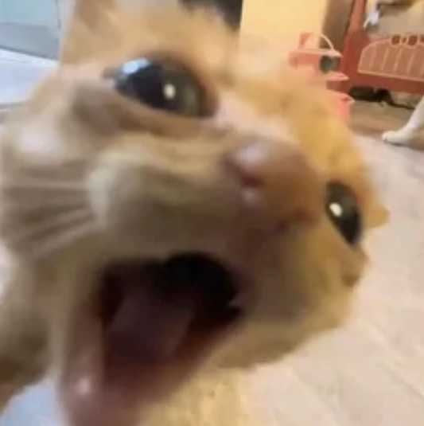

I am begging you guys to play Guild Wars 2. It is what they call "Peak" in the scene. You don't need to be a sweaty gamer to play like league of Legends. The story is so cool and involves you being the main character in the story.
Im having a ball like a bro that plays Basketball. I don't ply basketball, I'm what they call a "fat chud" on that fuckass app called Discord. But that's okay. I think I'm cool as hell and still a baller even though I don't play Basketball or have the physique of a Basketball player.
I really like the idea of screaming at the top of my lungs. I want to scare the shit out of pepole where they feel the need they have to call the police on me. It's never happened to me because I dont actually scream at the top of my lungs at people because that's just mean. I only do it in my rode nt1 5th gen mic with my scarlet focusrite 4th gen interface for unpaid passion fan projects. but other than that people know I just like to be loud.
